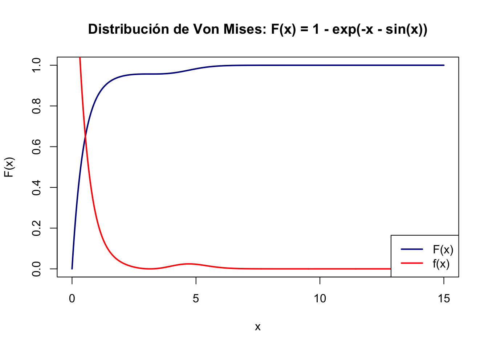
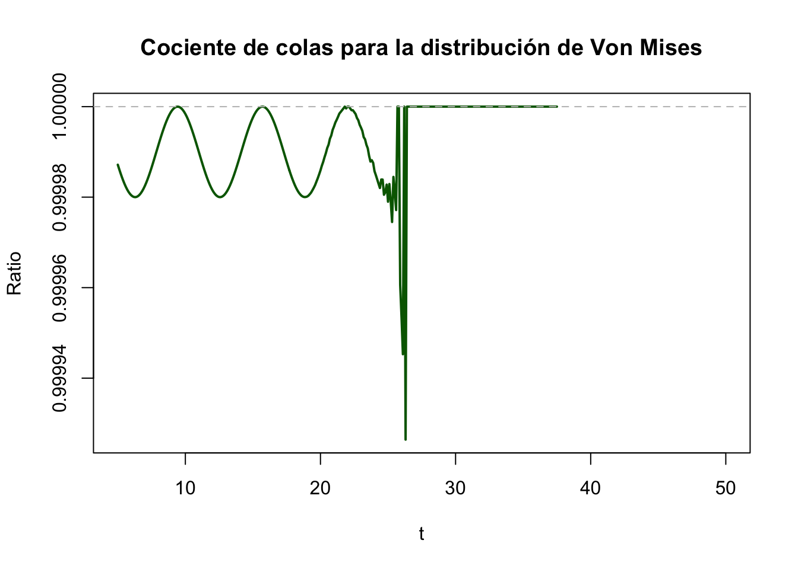

Ejercicio clase 1
2025-08-13
Capítulo 1 Ejemplo: Von Mises
La distribución
\[ F(x) = 1 - \exp(-x - \sin x) \]
cumple con el Teorema 1.9., es decir:
\[ \lim_{t \to \infty} \frac{\mathbb{P}(X > t)}{\mathbb{P}(X \geq t)} = 1, \]
pero no tiene Dominio de Atracción Extremal (DEA).
Este ejemplo, propuesto originalmente por Von Mises, muestra que la condición del Teorema 1.9 es necesaria pero no suficiente para que una distribución admita una ley límite tipo GEV.
Ejercicio:
- Graficar la función de distribución \(F(x)\).
# F(x) = 1 - exp(-x - sin(x)) para x >= 0
F_vonmises <- function(x) {
ifelse(x < 0, 0, 1 - exp(-x - sin(x)))
}
# Derivada = f(x), es continua y positiva, pero oscilante
f_vonmises <- function(x) {
ifelse(x < 0, 0, exp(-x - sin(x)) * (1 + cos(x)))
}
# Condición del Teorema 1.9: ratio de colas
ratio_tail <- function(x, eps = 1e-5) {
F1 <- F_vonmises(x)
F2 <- F_vonmises(x - eps)
if (F2 >= 1) return(NA) # evitamos división por 0 o negativo
(1 - F1) / (1 - F2)
}# Graficamos F, f y el cociente para verificar el Teorema 1.9
curve(F_vonmises, from = 0, to = 15, n = 1000, col = "darkblue", lwd = 2,
ylab = "F(x)", main = "Distribución de Von Mises: F(x) = 1 - exp(-x - sin(x))")
curve(f_vonmises, from = 0, to = 15, n = 1000, col = "red", lwd = 2,
ylab = "f(x)", main = "Densidad: f(x) = dF/dx", add = TRUE)
legend("bottomright", legend = c("F(x)", "f(x)"), col = c("darkblue", "red"), lwd = 2)
- Ver que cumple la condición del Teorema 1.9:
\[ \frac{1-F(t)}{1-F(t)-\varepsilon}\rightarrow 1 \quad \text{cuando}\: t \rightarrow \infty \]
El cociente tiende a 1 pero la oscilación en la cola no permite que haya convergencia a ninguna distribución tipo GEV (esto se ve en la derivada o tasa de decaimiento), por lo que no admite DEA.
xs <- seq(5, 50, by = 0.1)
ratios <- sapply(xs, ratio_tail)
plot(xs, ratios, type = "l", col = "darkgreen", lwd = 2,
ylab = "Ratio", xlab = "t",
main = "Cociente de colas para la distribución de Von Mises")
abline(h = 1, lty = 2, col = "gray")
- Mostrar oscilaciones que impiden el ajuste a una GEV entonces no admite DEA
Siguiendo a Haan y Ferreira (2006, p.21), sea \(F\) una función de distribución con extremo superior derecho \(x^\ast = \sup\{x : F(x) < 1\} \in \mathbb{R} \cup \{+\infty\}\), lo que simplemente indica que \(x^\ast\) puede ser finito o infinito, dependiendo del caso.
Teorema 1.2.5 (Haan y Ferreira (2006, p.21)): \(F\) pertenece al dominio de atracción de una distribución de valores extremos \(G_\gamma\), es decir:
\[ F \in D(G_\gamma), \]
si y solo si existe una función auxiliar \(f(t) > 0\) tal que
\[\begin{equation} \lim_{t \to x^*} \frac{1 - F(t + f(t) x)}{1 - F(t)} = (1 + \gamma x)^{-1/\gamma}, \quad \text{para todo } x \text{ tal que } 1 + \gamma x > 0. \end{equation}\]
Además, si la ecuación anterior se satisface para alguna función \(f > 0\), entonces también se puede tomar
\[ f(t) = \begin{cases} \gamma t, & \gamma > 0, \\ - \gamma (x^* - t), & \gamma < 0, \\ \displaystyle \frac{\int_t^{x^*} (1 - F(x))\, dx}{1 - F(t)}, & \gamma = 0. \end{cases} \]
Toda función \(f\) para la cual se cumple lo anterior, además satisface las siguientes propiedades asintóticas:
\[\begin{equation} \lim_{t \to \infty} \frac{f(t)}{t} = \gamma, \quad \text{si } \gamma > 0, \qquad \lim_{t \uparrow x^\ast} \frac{f(t)}{x^\ast - t} = -\gamma, \quad \text{si } \gamma < 0. \tag{1.2.11} \end{equation}\]
En el caso \(\gamma = 0\), \(f(t) \sim f_1(t)\), donde \(f_1(t) \to 0\) cuando \(t \uparrow x^\ast\).
Este ejemplo, propuesto originalmente por Von Mises, muestra que la condición del Teorema 1.9 es necesaria pero no suficiente para que una distribución admita una ley (distribución) límite tipo GEV. La razón es que la función de cola de \(F\), dada por
\[ \overline{F}(x) = e^{-x - \sin x}, \]
oscila indefinidamente debido al término \(\sin x\), y por lo tanto no cumple las condiciones de regularidad necesarias para que los máximos normalizados converjan a una distribución extremal.
En el caso de la distribución de Von Mises
\[ F(x) = 1 - e^{-x - \sin x} \quad \Rightarrow \quad \overline{F}(x) = e^{-x - \sin x}. \]
Entonces \(\frac{1 - F(t)}{1 - F(t + f(t)x)} = \frac{e^{-t - \sin t}}{e^{-t - f(t)x - \sin(t + f(t)x)}} = e^{f(t)x + \sin t - \sin(t + f(t)x)}\).Este cociente no converge cuando \(t \to \infty\), porque el término \(\sin t - \sin(t + f(t)x)\) oscila indefinidamente. Por lo tanto, el cociente no tiende a \((1 + \gamma x)^{1/\gamma}\) para ningún valor de \(\gamma\), lo cual confirma que esta distribución no pertenece a ningún dominio de atracción extremal.
Bibliografía:
- De Haan, Laurens, and Ana Ferreira. Extreme value theory: an introduction. New York, NY: Springer New York, 2006.